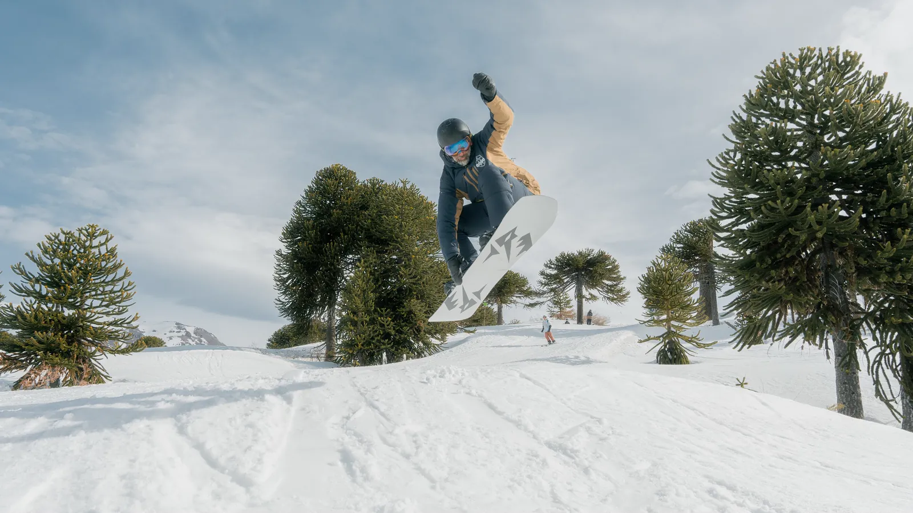

Esquí y snowboard en Caviahue

1 / 6
Caviahue y alrededores · Invierno
El centro de ski Caviahue tiene pistas para todos los niveles entre bosques de araucarias, con escuela y alquiler de equipos. Ekamai queda a pocos minutos de los medios.
El centro de ski está a pocos minutos del pueblo y tiene pistas para principiantes, intermedios y avanzados que bajan entre bosques de araucarias, con vista al lago y al volcán Copahue. Hay escuela de esquí y snowboard, alquiler de equipos y confiterías en la base.
Antes de ir, revisá en el sitio oficial los medios habilitados, las tarifas y el estado de las pistas.
Información oficial
Sitio oficial del centro de skiUbicación
Centro de Ski Caviahue
Ver ubicación en Google MapsTu lugar en Caviahue
Casas, cabañas, departamentos y hostal boutique para disfrutar de la Patagonia con tu familia, amigos o pareja. Reservá online o por WhatsApp.